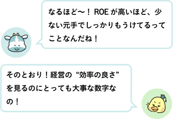
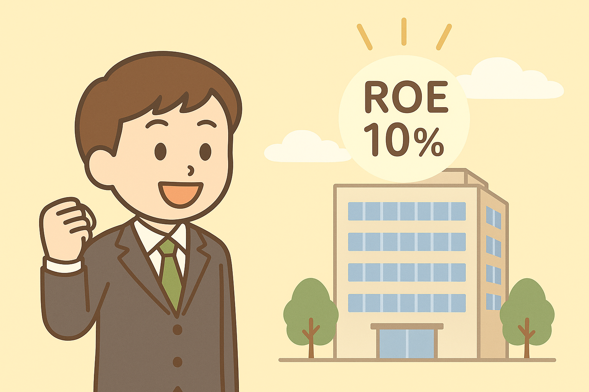
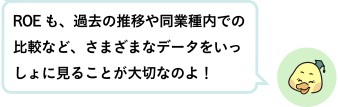
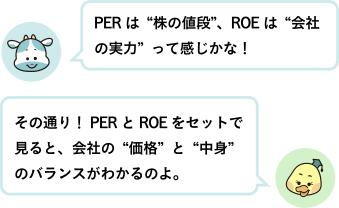

● ROEってなに？
ROEは「Return On Equity」の略で、日本語では「自己資本利益率」といいます。
かんたんに言うと…
株主のお金（自己資本）を使って、どれくらい上手に利益を出せているかをあらわす数字です。
ROEは以下の式で求めることができます。
ROEは「Return On Equity」の略で、日本語では「自己資本利益率」といいます。
かんたんに言うと…
株主のお金（自己資本）を使って、どれくらい上手に利益を出せているかをあらわす数字です。
ROEは以下の式で求めることができます。

＜簡単な例で見てみよう！＞
・利益：10万円
・自己資本：100万円
ROE = 10万円 ÷ 100万円 = 0.1（＝10％）
つまり、株主から預かった100万円で10万円のもうけを出したということ！

・利益：10万円
・自己資本：100万円
ROE = 10万円 ÷ 100万円 = 0.1（＝10％）
つまり、株主から預かった100万円で10万円のもうけを出したということ！
● ROEを見る目安

一般的には、ROEが10％を上回る企業は投資価値がある優良企業といわれています。
しかし、以下に挙げられる理由から、数値だけを見て一概には判断することはできません。
・業種によって平均値が多少異なる
・赤字が続いて自己資本を減らし続けている企業が、たまたま大きな利益を出した場合ROEが上がることがある
・保守的な経営により大きな投資をしていない場合、ROEが高くなることがある

しかし、以下に挙げられる理由から、数値だけを見て一概には判断することはできません。
・業種によって平均値が多少異なる
・赤字が続いて自己資本を減らし続けている企業が、たまたま大きな利益を出した場合ROEが上がることがある
・保守的な経営により大きな投資をしていない場合、ROEが高くなることがある
● PERとROEってどうちがうの？

● まとめ
・ROEは「株主のお金を使ってどれだけもうけているか」を見る指標
・一般に10％以上が目安だが、業種や状況によって違うので注意
・一時的な数字ではなく、過去からの推移も大切！ ・PER（値段）とROE（実力）をセットで見て、バランスのよい投資判断を！
・ROEは「株主のお金を使ってどれだけもうけているか」を見る指標
・一般に10％以上が目安だが、業種や状況によって違うので注意
・一時的な数字ではなく、過去からの推移も大切！ ・PER（値段）とROE（実力）をセットで見て、バランスのよい投資判断を！
次回は、「世界の出来事と株価」というお話。 円安・政治・世界の出来事と株価のつながりを見ていきましょう。